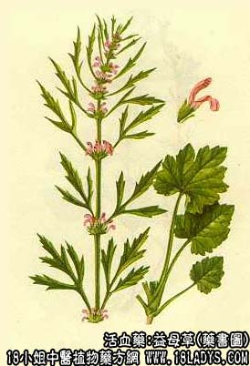

原文连接:https://www.daquan.com/post/2165.html



益母草为常用中药。始载《神农本草经》，列为上品，原名茺蔚。
别名：坤草、茺蔚草。
来源：为唇形科植物益母草或大花益母草的干燥地上全草。均为野生。
植物形态：一年或二年生草本。茎直立，方形，单一或分枝，被微毛。叶对生；叶形多种，一年基生叶有长柄，叶片略呈圆形，叶缘5～9浅裂，每裂片具2～3钝齿，基部心形；茎中部的叶有短柄，3全裂，裂片近披针形，中央裂片常再三裂，两侧叶片常再1～2裂，最终裂片近线形，先端渐尖；最上部的叶不分裂，线形，近无柄，表面绿色，背面浅绿色，两面均被短柔毛。花多数，花冠唇形，长9～12毫米，上下唇几相等，淡红或紫红色，花萼钟形，轮伞状生于叶腋。小坚果褐色，三棱形。
大花益母草：最上部的叶3全裂。花冠较大，长15～20毫米，下唇比上唇短1/3.其余同益母草。
产地：全国各地均有生产。
性状鉴别：茎方形，四面有纵沟，有稀疏分枝，密披毛茸，棱与节上更密，全体黄绿色，断面中部有大形白色髓。叶多脱落或残存，皱缩。花集成轮伞花序，花冠多已脱落，花萼存在。子房很小，在萼筒底部，四裂。小坚果褐色，成熟时三棱形。有青草气，味甘微苦。
以色绿，茎细，质嫩，无杂草者为佳。
主要成分：含益母草硷甲、益母草硷乙。另含水苏硷、氯化钾、月桂酸、油酸等。
功效与作用：活血调经、行血散瘀，为子宫兴奋药。
1、收缩子宫：能显著增强子宫肌肉的收缩力和紧张性，作用与藏红花和脑垂体后叶激素相似，但力较弱。有效部分为叶部。煎剂效力优于酊剂。
2、利尿：作用明显。
炮制：切咀，生用。
性味：辛、苦，微寒。
归经：入肝、心包经。
功能：祛瘀生新，活血调经、利尿。
主治：月经不调，产后血瘀腹痛，水肿，小便不利，亦常用于外科痈肿，外伤瘀血作痛等症。
临床应用：为妇科常用药。
1、治产后出血或恶露不绝，腹部胀痛，由子宫收缩无力引起者（出血量少、色黑、夹杂血块、腹痛拒按），取其有收缩子宫作用，止血除恶露效果比较确实。可单服益母草流浸膏，或入煎剂，配山楂炭、当归、川芎、艾叶等，虚寒较甚者配生化汤。
2、治痛经，由气血瘀滞引起者，配当归、白芍、香附等，方如调经汤。
3、治腹有癓瘕（包块，如慢性附件炎、盆腔炎等），或妇女因气血虚弱、生殖功能低下而致的久不受孕，可用益母草30～60g，加红糖适量，或加蜜枣5～6枚，水煎代茶，或煮鸡蛋，随时可服。又可用益母草30～60g，5碗水煎成2碗，去渣，以水炖鸡，连汤服。以上方药长期服用有一定效果。一般月经病可参照以上服法，或用流浸膏。
4、治肾炎浮肿和血尿，取其有利尿去瘀作用，服后水肿消退较迅速，食欲增加，对止血尿也有一定帮助，但去尿蛋白的效果不明显。总的来说，治急性肾炎效果较好，而治慢性肾炎则价值较小。宜用干品或鲜品，水煎服。单用虽亦有效，但一般都随证配伍其他药。
用量：益母草生药有效成分含量比例较低，故水煎剂用量宜大，一般每次15~60g。治肾炎用量更大，干品一日用40～120g，鲜品用80～240g，水煎一日分2～3次温服。治妇科病最好用浓缩流浸膏，每日3～6毫升，分三次。
处方举例：调经汤：益母草15g，香附12g，当归12g，白芍12g，炙甘草45g，水煎服。
注：1、临床及动物实验证明，益母草浸膏及煎剂对子宫有强而持久的兴奋作用，不但能增强其收缩力，同时能提高其紧张度和收缩频率。常用于月经过多，产后恶露不止，子宫复旧不全，产后流血过多等症。据《中国药用植物鉴》记载多服能引起中毒，甚至死亡。
3、各地习用益母草的采收时期，互不一致，有的地区在花开前采收，认为质嫩，色绿，质优；部分地区则习用开花后的老株。
3、成分：主要为益母草硷，益母草硷含量随开花的时间而变，初期仅含微量，7～8月开花中期含量为0.01%～0.03%，最高可达0.04%。因此，益母草的采收时间很重要。应在7～8月间枝叶生长茂盛而花未全开时间采收为宜。